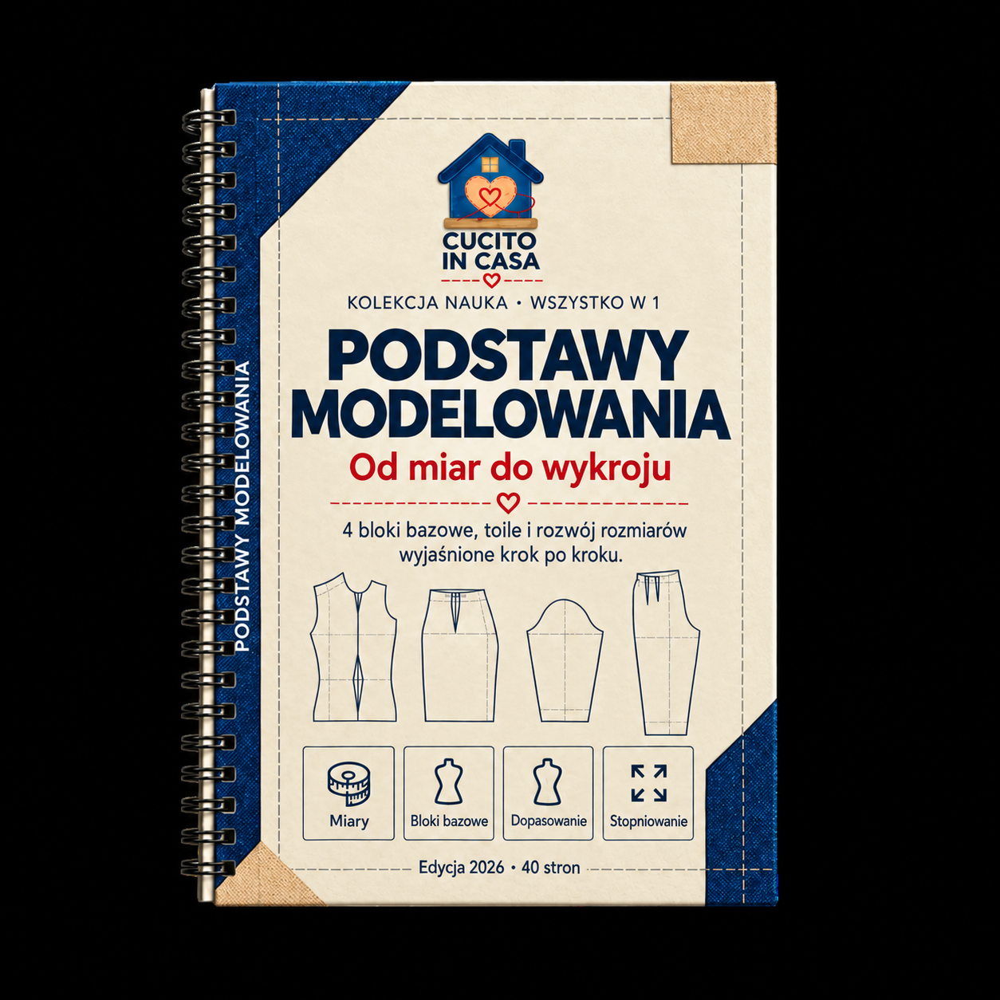

Bonus 2 z 5
Podstawy Modelowania
Od pomiaru ciała do gotowego wykroju: bloki bazowe, próba, stopniowanie rozmiarów — wszystko, co musisz wiedzieć, żeby rozumieć wykrój od środka.

Biblia Wykrojów Krawiectwa
Spis Treści
- 1 · Czym jest modelowanie wykrojów3
- 2 · Pomiary ciała5
- 3 · Blok bazowy stanika11
- 4 · Blok bazowy spódnicy18
- 5 · Blok bazowy spodni23
- 6 · Blok bazowy rękawa29
- 7 · Próba (toile)34
- 8 · Stopniowanie rozmiarów38
- 9 · Zapasy na szwy i oznaczenia42
- 10 · Od papieru do tkaniny45
- Zestaw narzędzi modelarskich — checklist47
- Następny krok48
Sekcja 1
Czym Jest Modelowanie Wykrojów
Zrozumiesz, dlaczego warto umieć konstruować wykroje samodzielnie i czym różni się modelowanie od zwykłego kopiowania szablonów.
Modelowanie wykrojów to umiejętność przekładania trójwymiarowego kształtu ludzkiego ciała na płaskie elementy tkaniny, które po zszyciu odtworzą ten kształt z precyzją.
Co zyskujesz, ucząc się modelowania
Kiedy kupujesz gotowy wykrój, otrzymujesz efekt końcowy czyjejś pracy konstrukcyjnej. Nie wiesz, dlaczego zaszewka jest w tym miejscu, skąd bierze się kształt rękawa ani jak zmienić proporcje bez psucia całego wykroju. Modelowanie daje Ci tę wiedzę.
Bez modelowania
- Kopiujesz linie, których nie rozumiesz
- Poprawki robisz na chybił trafił
- Zmiana rozmiaru = nowy wykrój do kupienia
- Ograniczona liczba modeli do wyboru
- Zależność od dostępnych rozmiarów
Z modelowaniem
- Rozumiesz każdą linię i zaszewkę
- Poprawki robisz świadomie i celnie
- Dostosowujesz wykrój do każdej sylwetki
- Projektujesz własne modele od zera
- Jeden blok bazowy = dziesiątki wariantów
Kluczowe pojęcia, zanim zaczniemy
| Termin | Co oznacza |
|---|
| Blok bazowy | Podstawowy wykrój bez zapasów na szwy, dodatków ani elementów zdobniczych — dopasowany do ciała jak druga skóra. Punkt wyjścia do każdego projektu. |
| Zaszewka | Klinowe wycięcie w tkaninie, które pozwala przekształcić płaski materiał w trójwymiarowy kształt (np. wypukłość biustu, łopatki, biodra). |
| Próba (toile) | Testowa wersja odzieży uszyta z taniej tkaniny, służąca do sprawdzenia dopasowania przed krojeniem właściwego materiału. |
| Stopniowanie (gradacja) | Systematyczne powiększanie lub zmniejszanie wykroju według tabel rozmiarowych z zachowaniem proporcji. |
| Luzy konstrukcyjne | Dodatkowe centymetry dodawane do pomiarów ciała, aby odzież nie przylegała ciasno — ich wielkość zależy od typu ubioru (np. luz 4 cm w biuście dla bluzki, 8–10 cm dla płaszcza). |
| Nitka osnowy (kierunek nici) | Linia na wykroju wskazująca, jak ułożyć element równolegle do krajki tkaniny. Decyduje o tym, jak odzież opada i się układa. |
| Zapas na szwy | Dodatkowy margines tkaniny wokół linii szycia, umożliwiający złączenie elementów. Standardowo 1–1,5 cm. |
Zasada podstawowaKażdy wykrój, niezależnie od stopnia skomplikowania, wywodzi się z jednego z czterech bloków bazowych: stanika, spódnicy, spodni lub rękawa. Opanuj te cztery, a będziesz w stanie skonstruować dowolny model odzieży.
Jak korzystać z tego przewodnika
Ten bonus przeprowadzi Cię przez cały proces modelowania krok po kroku. Kolejność sekcji nie jest przypadkowa:
- Pomiary ciała — dokładne pomiary to fundament. Bez nich żaden wykrój nie będzie pasował.
- Bloki bazowe — konstruujesz cztery podstawowe formy, z których wywodzą się wszystkie modele.
- Próba i korekta — sprawdzasz dopasowanie na taniej tkaninie i poprawiasz wykrój.
- Stopniowanie — uczysz się powiększać i zmniejszać gotowy wykrój.
- Przygotowanie do krojenia — dodajesz zapasy na szwy, oznaczenia i przenosisz wykrój na tkaninę.
WażneNie pomijaj żadnego etapu, nawet jeśli wydaje Ci się oczywisty. Precyzja w pomiarach oszczędzi godziny poprawek później. Pośpiech na etapie konstrukcji bazowej oznacza błędy, które mnożą się z każdym kolejnym krokiem.
Sekcja 2
Pomiary Ciała
Nauczysz się prawidłowo zdejmować ponad 20 pomiarów ciała i uzupełnisz kartę miar, która posłuży Ci do budowy każdego bloku bazowego.
Dokładność pomiarów decyduje o jakości wykroju. Różnica 1 cm w obwodzie biustu przekłada się na 0,25 cm na każdym z czterech paneli stanika — wystarczy, żeby odzież zaczęła ciągnąć lub marszczyć.
Przygotowanie do pomiaru
- Ubiór: Mierz na bieliźnie lub cienkim, dopasowanym ubraniu. Grube warstwy dodają fałszywe centymetry.
- Taśma miernicza: Używaj nieelastycznej, krawieckiej taśmy mierniczej. Nigdy nie używaj metalowej miary budowlanej.
- Postawa: Osoba mierzona stoi naturalnie i prosto, z rękami luźno opuszczonymi wzdłuż ciała. Nie wciąga brzucha, nie prostuje się sztucznie.
- Talia: Zawiąż wąski sznurek lub gumkę wokół talii — osadzi się on w naturalnym zagłębieniu i wyznaczy linię talii.
- Pomoc: Poproś drugą osobę o pomoc — samodzielne zdejmowanie pomiarów pleców czy ramion jest niedokładne.
WskazówkaZaznacz na bieliźnie (lub podkoszulku) małymi naklejkami punkty kluczowe: szczyt biustu, punkt ramionowy, koniec barku. Ułatwia to powtarzalność pomiarów i eliminuje przypadkowe przesunięcia taśmy.
Kompletna lista pomiarów
Pomiary obwodowe
| Nr | Pomiar | Jak mierzyć | Twój wymiar (cm) |
|---|
| 1 | Obwód biustu | Taśma poziomo wokół klatki piersiowej, przez najwyższy punkt biustu, bez ściskania | |
| 2 | Obwód pod biustem | Taśma poziomo tuż pod biustem, ciasno przylegająca | |
| 3 | Obwód talii | Przez najwęższe miejsce tułowia — tam, gdzie osiadł sznurek | |
| 4 | Obwód bioder | Przez najszersze miejsce bioder i pośladków, taśma poziomo | |
| 5 | Obwód szyi | U nasady szyi, taśma przechodzi przez dołek szyjny z przodu i 7. kręg szyjny z tyłu | |
| 6 | Obwód ramienia | Wokół najgrubszej części ramienia (biceps), ręka luźno opuszczona | |
| 7 | Obwód nadgarstka | Wokół nadgarstka, w najwęższym miejscu | |
| 8 | Obwód uda | Wokół najgrubszej części uda, tuż pod pośladkiem | |
| 9 | Obwód kolana | Wokół kolana przy lekko ugiętej nodze | |
| 10 | Obwód łydki | Wokół najgrubszej części łydki | |
| 11 | Obwód kostki | Wokół kostki, tuż nad kością | |
Pomiary długościowe i szerokościowe
| Nr | Pomiar | Jak mierzyć | Twój wymiar (cm) |
|---|
| 12 | Długość przodu do talii | Od punktu ramionowego (przy szyi) przez szczyt biustu do talii | |
| 13 | Długość tyłu do talii | Od 7. kręgu szyjnego (wystająca kość na karku) prosto w dół do talii | |
| 14 | Długość barku | Od nasady szyi do końca barku (punkt ramionowy) | |
| 15 | Szerokość pleców | Między punktami, w których ramiona łączą się z tułowiem, mierzona po plecach | |
| 16 | Szerokość klatki piersiowej | Między punktami, w których ramiona łączą się z tułowiem, mierzona po przodzie | |
| 17 | Wysokość biustu | Od punktu ramionowego do szczytu biustu | |
| 18 | Rozstaw biustu | Odległość między szczytami biustu | |
| 19 | Długość rękawa | Od końca barku, przez lekko ugięty łokieć, do nadgarstka | |
| 20 | Wysokość biodra | Od talii prosto w dół do najszerszego miejsca bioder (zwykle 18–22 cm) | |
| 21 | Długość spódnicy | Od talii w dół do żądanej długości | |
| 22 | Długość spodni (zewnętrzna) | Od talii wzdłuż boku nogi do podłogi | |
| 23 | Długość kroku | Od talii przodu, przez krocze, do talii tyłu | |
| 24 | Wysokość siedzenia | Osoba siedzi na twardym krześle — od talii do powierzchni krzesła | |
| 25 | Wysokość kolana | Od talii w dół do środka rzepki kolanowej | |
Częsty błąd: ściskanie taśmyTaśma miernicza powinna przylegać do ciała, ale nie wciskać się w skórę. Jeśli po zdjęciu taśmy widzisz ślad na ciele — mierzyłaś za ciasno. Dodatkowa wskazówka: przy pomiarach obwodowych powinieneś/powinnaś być w stanie wsunąć pod taśmę płasko jeden palec.
Tabela luzów konstrukcyjnych
Luzy dodajesz do pomiarów ciała przed rozpoczęciem konstrukcji bloku. Ich wielkość zależy od typu odzieży:
| Typ odzieży | Luz w biuście | Luz w talii | Luz w biodrach |
|---|
| Odzież ściśle przylegająca (gorset, body) | 0 do −2 cm | 0 cm | 0 cm |
| Odzież dopasowana (bluzka, sukienka ołówkowa) | 3–4 cm | 2–3 cm | 2–3 cm |
| Odzież półprzylegająca (koszula, żakiet lekki) | 5–7 cm | 3–4 cm | 3–5 cm |
| Odzież luźna (tunika, sukienka trapezowa) | 8–10 cm | 5–7 cm | 5–7 cm |
| Odzież wierzchnia (płaszcz, kurtka) | 10–14 cm | 6–8 cm | 6–8 cm |
Jak stosować luzyLuz rozkłada się równomiernie na cały obwód. Przy biuście 92 cm i luzie 4 cm pracujesz z wartością 96 cm. Na połówce przodu (¼ obwodu) to dodatkowy 1 cm. Niepozorna różnica, ale decyduje o komforcie noszenia.
Karta pomiarów — szablon
Wydrukuj lub przepisz poniższą tabelę. Uzupełnij ją swoimi pomiarami i przechowuj razem z wykrojami. Datuj każdą kartę — pomiary mogą się zmieniać.
| Data pomiaru: | ____ / ____ / ________ |
|---|
| Imię / klient | |
| Obwód biustu | ______ cm | + luz ______ = ______ cm |
| Obwód talii | ______ cm | + luz ______ = ______ cm |
| Obwód bioder | ______ cm | + luz ______ = ______ cm |
| Obwód szyi | ______ cm | |
| Długość przodu do talii | ______ cm | |
| Długość tyłu do talii | ______ cm | |
| Długość barku | ______ cm | |
| Szerokość pleców | ______ cm | |
| Szerokość klatki | ______ cm | |
| Wysokość biustu | ______ cm | |
| Rozstaw biustu | ______ cm | |
| Obwód ramienia | ______ cm | |
| Długość rękawa | ______ cm | |
| Wysokość biodra | ______ cm | |
| Wysokość siedzenia | ______ cm | |
| Obwód uda | ______ cm | |
| Długość spodni (zewn.) | ______ cm | |
| Uwagi: | |
Checklist — przed rozpoczęciem konstrukcji
- Wszystkie 25 pomiarów zdęte i zapisane
- Sznurek zawiązany na talii podczas pomiaru
- Pomiary zdęte przez drugą osobę (nie samodzielnie)
- Luzy konstrukcyjne dobrane do typu odzieży
- Karta pomiarów opatrzona datą
- Taśma miernicza sprawdzona (nie rozciągnięta)
Sekcja 3
Blok Bazowy Stanika
Skonstruujesz podstawowy wykrój górnej części tułowia (przód i tył) z własnymi pomiarami — fundament każdej bluzki, sukienki i żakietu.
Blok stanika to najważniejszy wykrój w całym modelarstwie. Z niego wywodzą się bluzki, koszule, sukienki, żakiety, płaszcze — każdy model odzieży pokrywający tułów. Opanuj go dobrze, a reszta przyjdzie naturalnie.
Co będziesz potrzebować
Narzędzia
- Papier do wykrojów (brystol lub papier pakowy)
- Linijka krawiecka (min. 60 cm)
- Krzywik krawiecki (French curve)
- Kątownik lub ekierka
- Ołówek i gumka
- Taśma klejąca
Pomiary potrzebne do bloku
- Obwód biustu + luz
- Obwód talii + luz
- Obwód szyi
- Długość przodu do talii
- Długość tyłu do talii
- Długość barku
- Szerokość pleców
- Szerokość klatki piersiowej
- Wysokość biustu
- Rozstaw biustu
Przykładowe pomiary do ćwiczenia
Jeśli chcesz przećwiczyć konstrukcję przed użyciem własnych miar, użyj poniższych wartości (rozmiar 40, odzież dopasowana, luz 4 cm w biuście):
| Pomiar | Ciało (cm) | + Luz | Do konstrukcji (cm) |
|---|
| Obwód biustu | 88 | +4 | 92 |
| Obwód talii | 70 | +3 | 73 |
| Obwód szyi | 36 | — | 36 |
| Dł. przodu do talii | 43 | — | 43 |
| Dł. tyłu do talii | 41 | — | 41 |
| Dł. barku | 13 | — | 13 |
| Szer. pleców | 35 | — | 35 |
| Szer. klatki piersiowej | 33 | — | 33 |
| Wysokość biustu | 26 | — | 26 |
| Rozstaw biustu | 19 | — | 19 |
Konstrukcja tyłu stanika — krok po kroku
- Narysuj prostokąt bazowy. Szerokość = ½ obwodu biustu z luzem (np. 92 ÷ 2 = 46 cm). Wysokość = długość tyłu do talii (np. 41 cm). Lewy bok = linia środka tyłu. Dolna krawędź = linia talii.
- Wyznacz linię biustu. Od górnej krawędzi odmierz w dół ½ długości tyłu do talii + 1 cm (np. 41 ÷ 2 + 1 = 21,5 cm). Narysuj linię poziomą.
- Wyznacz linię szerokości pleców. Na linii biustu, od lewego boku odmierz ½ szerokości pleców + 1 cm (np. 35 ÷ 2 + 1 = 18,5 cm). Narysuj pionową linię pomocniczą.
- Narysuj dekolt tyłu. Od lewego górnego rogu odmierz w prawo: obwód szyi ÷ 6 + 0,5 cm (np. 36 ÷ 6 + 0,5 = 6,5 cm). W górę odmierz: obwód szyi ÷ 6 − 1 cm (np. 36 ÷ 6 − 1 = 5 cm). Połącz krzywą — to wycięcie dekoltu tyłu.
- Narysuj linię barku. Od końca dekoltu odmierz długość barku (np. 13 cm) pod kątem opadającym ok. 18–20° w stronę ramienia. Koniec barku powinien sięgać do linii pomocniczej szerokości pleców lub lekko ją przekraczać.
- Narysuj pachę (wykrój pachy). Od końca barku narysuj krzywą opadającą do punktu na linii biustu, który leży w ¼ całkowitej szerokości prostokąta od linii szerokości pleców. Użyj krzywika, by linia była łagodna. Głębokość pachy: punkt najniższy leży na linii biustu.
- Narysuj linię boku. Od punktu pachy na linii biustu poprowadź linię prostą w dół do linii talii.
- Oblicz i narysuj zaszewkę talii tyłu. Różnica między obwodem biustu a talią (z luzami) rozdzielona na zaszewki. Zaszewka tyłu: umieść ją na środku połowy tyłu, szerokość zwykle 2,5–3,5 cm, od talii w górę ok. 15 cm.
Kąt barkuStandardowy spadek barku to 18–20° od poziomu. Jeśli osoba ma ramiona opadające, zwiększ do 22–24°. Przy ramionach wysokich (wyprostowanych) zmniejsz do 14–16°. Dokładne dopasowanie sprawdzisz na próbie.
Konstrukcja przodu stanika — krok po kroku
- Użyj tego samego prostokąta bazowego. Prawa strona = linia środka przodu. Wysokość = długość przodu do talii (np. 43 cm — zauważ, że przód jest dłuższy niż tył o 2 cm ze względu na wypukłość biustu).
- Przenieś linie biustu i szerokości klatki na te same wysokości co w tyle. Linia biustu na tej samej absolutnej wysokości.
- Narysuj dekolt przodu. Od prawego górnego rogu odmierz w lewo: obwód szyi ÷ 6 + 0,5 cm (identycznie jak tył). W dół odmierz: obwód szyi ÷ 6 + 1,5 cm (głębszy niż tył, np. 7,5 cm). Połącz łagodną krzywą.
- Narysuj linię barku przodu. Identyczna długość jak tył (13 cm), ale kąt opadania mniejszy o ok. 2° niż na tyle (przód jest bardziej płaski).
- Narysuj pachę przodu. Symetryczna do tyłu, ale z lekko inną krzywizną. Głębokość pachy ta sama co w tyle.
- Wyznacz punkt biustu. Na linii biustu, od środka przodu odmierz ½ rozstawu biustu (np. 19 ÷ 2 = 9,5 cm). Od tego punktu poprowadź pionową linię w górę do barku — to oś zaszewki biustowej.
- Narysuj zaszewkę biustową. Zaszewka zaczyna się na barku (po obu stronach osi zaszewki), jej wierzchołek sięga do punktu biustu (lub 1–2 cm przed nim). Szerokość na barku: 3–5 cm w zależności od rozmiaru miseczki.
- Narysuj zaszewkę talii przodu. Na tej samej osi co zaszewka biustowa, od talii w górę. Szerokość: 2–3 cm.
- Narysuj linię boku przodu symetrycznie do tyłu.
Częsty błąd: pomijanie różnicy przód/tyłPrzód stanika jest zawsze dłuższy niż tył (zwykle o 1,5–3 cm), ponieważ musi uwzględnić wypukłość biustu. Jeśli użyjesz tej samej długości dla obu elementów, przód będzie ciągnął w górę i dekolt będzie się podwijał.
Kontrola gotowego bloku
Weryfikacja — przed wycięciem
- Linie boku przodu i tyłu mają tę samą długość
- Krzywe pachy przodu i tyłu łączą się płynnie (przyłóż oba elementy)
- Obwód na linii biustu = obwód biustu + luz
- Obwód na linii talii (po zamknięciu zaszewek) = obwód talii + luz
- Dekolt leży płasko — narysuj go na osobnym papierze i sprawdź, czy nie faluje
- Zaszewka biustowa celuje w punkt biustu (nie obok niego)
- Wszystkie linie są gładkie i łagodne — bez ostrych załamań
Rozkład wartości zaszewek talii
Całkowita wartość zaszewek talii = (obwód biustu + luz) − (obwód talii + luz). Tę różnicę rozdzielasz między cztery strefy:
| Strefa | Udział w całości | Przykład (różnica 19 cm) |
|---|
| Bok (szwy boczne × 2) | ~40% | 7,6 cm (3,8 cm na stronę) |
| Zaszewka tyłu | ~25% | 4,75 cm |
| Zaszewka przodu | ~20% | 3,8 cm |
| Środek przodu i tyłu | ~15% | 2,85 cm (rozkład na linie środkowe) |
Zasada proporcjiJeśli różnica biust–talia jest duża (powyżej 22 cm), dodaj piątą zaszewkę zamiast powiększać istniejące. Zaszewka szersza niż 4,5 cm nie leży ładnie i tworzy fałdy.
Sekcja 4
Blok Bazowy Spódnicy
Skonstruujesz blok prostej spódnicy — bazę dla każdego modelu od ołówkowej po rozkloszowaną.
Spódnica prosta to najprostszy blok bazowy i doskonały punkt wyjścia, jeśli dopiero zaczynasz modelowanie. Wymaga tylko trzech pomiarów obwodowych i trzech długościowych.
Potrzebne pomiary
| Pomiar | Do czego służy |
|---|
| Obwód talii + luz | Górna krawędź spódnicy |
| Obwód bioder + luz | Najszersza część spódnicy |
| Wysokość biodra | Odległość od talii do bioder (18–22 cm) |
| Długość spódnicy | Od talii do dolnej krawędzi |
Konstrukcja tyłu spódnicy
- Narysuj prostokąt. Szerokość = ¼ obwodu bioder z luzem. Wysokość = długość spódnicy. Lewy bok = linia środka tyłu. Dolna krawędź = linia dołu.
- Wyznacz linię bioder. Od górnej krawędzi (talii) odmierz w dół wysokość biodra (np. 20 cm). Narysuj linię poziomą.
- Oblicz różnicę talia–biodra. (¼ obwodu bioder z luzem) − (¼ obwodu talii z luzem) = wartość, którą musisz zabrać z linii talii za pomocą zaszewki i boku.
- Zwęź bok na talii. Od prawego górnego rogu wejdź w lewo o 1–1,5 cm. Połącz ten punkt łagodną krzywą z punktem biodra na linii bocznej.
- Narysuj zaszewkę tyłu. Umieść ją na środku połowy tyłu. Szerokość: 2,5–3 cm. Długość: 12–14 cm w dół od talii. Reszta różnicy pochodzi ze zwężenia boku.
- Wyrysuj linię talii. Lekko zakrzyw ją w górę przy linii środka tyłu (ok. 0,5–1 cm) i przy boku (ok. 1 cm) — tak, aby pas leżał na ciele, a nie sterczał.
Konstrukcja przodu spódnicy
- Narysuj identyczny prostokąt jak dla tyłu. Prawa strona = linia środka przodu (na złamanie tkaniny).
- Wyznacz linię bioder na tej samej wysokości co w tyle.
- Zwęź bok na talii — identycznie jak w tyle.
- Narysuj zaszewkę przodu. Umieść ją na środku połowy przodu. Szerokość: 2–2,5 cm (mniejsza niż tył, bo brzuch jest bardziej płaski niż pośladki). Długość: 9–10 cm.
- Wyrysuj linię talii z lekkim uniesiem na środku przodu (0,5 cm) i przy boku (1 cm).
Reguła zaszewek spódnicyZaszewka tyłu jest zawsze dłuższa i szersza niż przodu (pośladki mają większą wypukłość niż brzuch). Typowe proporcje: tył 3 cm × 14 cm, przód 2,5 cm × 10 cm. Dla bioder bardzo wypukłych dodaj dwie węższe zaszewki zamiast jednej szerokiej.
Rozkład wartości zaszewek spódnicy
| Strefa | Udział w całości | Przykład (różnica 12 cm na ½ obwodu) |
|---|
| Szwy boczne (×2) | ~50% | 3 cm na każdą stronę |
| Zaszewka tyłu | ~30% | 3,5 cm |
| Zaszewka przodu | ~20% | 2,5 cm |
Błąd: prosta linia taliiJeśli narysujesz linię talii jako idealnie prostą, pas spódnicy będzie sterczał na środku przodu i tyłu. Talii ludzkiego ciała nie jest płaska — jest wklęsła. Dlatego linia talii na wykroju musi być lekko wygięta w górę na środku.
Warianty wywodzące się z bloku prostego
Spódnica ołówkowa
Blok bazowy + zwężenie na dole (1,5–2 cm na każdą stronę w odległości 5 cm od dołu) + rozcięcie z tyłu (15–20 cm).
Spódnica trapezowa (A-line)
Blok bazowy + poszerzenie na dole: zamknij zaszewki i przetransferuj ich wartość na dolną krawędź, rozkładając materiał na boki.
Spódnica rozkloszowana
Oddzielna konstrukcja kołowa: promień wewnętrzny = obwód talii ÷ (2π), promień zewnętrzny = wewnętrzny + długość spódnicy.
Spódnica z fałdami
Blok bazowy + dodatkowy materiał na fałdy. Każda fałda kontrowa wymaga trzykrotności swojej widocznej szerokości.
Kontrola bloku spódnicy
- Obwód na linii bioder (przód + tył × 2) = obwód bioder + luz
- Obwód na linii talii (po zamknięciu zaszewek) = obwód talii + luz
- Linie boku przodu i tyłu mają tę samą długość
- Zaszewka tyłu jest dłuższa i szersza niż przodu
- Linia talii jest lekko zakrzywiona (nie prosta)
- Linia dołu jest pozioma (sprawdź kątownikiem)
Sekcja 5
Blok Bazowy Spodni
Skonstruujesz wykrój bazowy spodni (przód i tył) — najtrudniejszy z czterech bloków, bo musi uwzględnić ruch nóg i kształt krocza.
Spodnie to najtrudniejszy blok bazowy, bo wymaga trójwymiarowego myślenia o kroczu, wewnętrznym i zewnętrznym szwie nogi. Kluczem jest dokładny pomiar wysokości siedzenia i cierpliwość przy dopasowywaniu krzywej krocza.
Potrzebne pomiary
| Pomiar | Symbol | Przykład (rozm. 40) |
|---|
| Obwód talii + luz | OT | 73 cm |
| Obwód bioder + luz | OB | 100 cm |
| Wysokość siedzenia | WS | 27 cm |
| Wysokość biodra | WB | 20 cm |
| Długość spodni (zewnętrzna) | DS | 105 cm |
| Wysokość kolana | WK | 60 cm |
| Obwód uda | OU | 57 cm |
| Obwód kolana | OK | 38 cm |
| Szerokość na dole (żądana) | SD | 20 cm (½ obwodu dołu) |
Konstrukcja przodu spodni
- Narysuj linię środka przodu (pionowa). Od góry (talia) odmierz w dół: wysokość siedzenia (WS) → linia krocza, wysokość kolana (WK) → linia kolana, długość spodni (DS) → linia dołu.
- Na linii krocza odmierz szerokość przodu: ¼ obwodu bioder (np. 100 ÷ 4 = 25 cm) w lewo od środka. To linia boku.
- Przedłużenie krocza przodu: od linii środka w prawo odmierz 1/16 obwodu bioder + 0,5 cm (np. 100 ÷ 16 + 0,5 = 6,75 cm). To punkt krocza przodu.
- Narysuj krzywą krocza przodu. Od talii (linia środka) prosto w dół do punktu ok. 4 cm nad linią krocza, potem łagodną krzywą do punktu krocza. Krzywa jest łagodna — nie ostry kąt.
- Wyznacz linię kolana i dołu. Na linii kolana i dołu odmierz żądaną szerokość symetrycznie po obu stronach linii złamu (linia łącząca środek talii ze środkiem dołu nogawki).
- Narysuj linie szwu bocznego i wewnętrznego łącząc punkty krocza → kolano → dół i bok na biodrach → kolano → dół.
- Narysuj zaszewki talii przodu: jedna zaszewka, 2–2,5 cm szerokości, 8–10 cm długości, umieszczona na środku połowy przodu.
Konstrukcja tyłu spodni
- Skopiuj kontur przodu jako punkt wyjścia. Tył jest szerszy w biodrach i ma głębsze krocze.
- Poszerz krocze tyłu: od punktu krocza przodu dodaj w prawo jeszcze 1/16 obwodu bioder (np. +6,25 cm). Łączne przedłużenie krocza tyłu jest ok. dwukrotnie większe niż przodu.
- Podnieś środek tyłu na talii o 1,5–2 cm (pośladki podnoszą tylną linię talii).
- Pochyl linię środka tyłu lekko w stronę krocza (ok. 1–2 cm odchylenia od pionu na wysokości bioder). To odwzorowuje naturalne pochylenie pośladków.
- Poszerz bok tyłu: na linii bioder dodaj 0,5–1 cm na zewnątrz w porównaniu z przodem.
- Narysuj krzywą krocza tyłu. Głębsza i dłuższa niż przodu — biegnie od podniesionego punktu talii łukiem do rozszerzonego punktu krocza.
- Narysuj zaszewki talii tyłu: jedna lub dwie zaszewki, łącznie 3–4 cm szerokości, 13–15 cm długości (dłuższe niż przodu, bo pośladki mają większą wypukłość).
- Dostosuj szerokość nogawki: tył jest o 1–2 cm szerszy niż przód na każdym poziomie (kolano, dół).
Typowy błąd: płaskie kroczeNajczęstszy problem z domowymi wykrojami spodni to krzywa krocza narysowana jako linia prosta lub zbyt płaska. Efekt: tkanina ciągnie między nogami, jest niewygodna i nie leży. Krocze musi mieć wyraźną krzywiznę — użyj krzywika i sprawdź na próbie.
Linia złamu (strzałka)Linia złamu nogawki biegnie od środka szerokości spodni na talii prosto w dół do środka dołu nogawki. Wzdłuż niej prasuje się kant spodni. Przed krojeniem sprawdź, że przechodzi przez środek kolana.
Proporcje kluczowe — skrócona tabela kontrolna
| Element | Przód | Tył |
|---|
| Przedłużenie krocza | OB ÷ 16 + 0,5 cm | OB ÷ 16 + 0,5 cm + kolejne OB ÷ 16 |
| Szerokość na biodrach | ¼ OB | ¼ OB + 0,5–1 cm |
| Zaszewka talii (szer.) | 2–2,5 cm | 3–4 cm (lub 2 × 1,5–2 cm) |
| Zaszewka talii (dł.) | 8–10 cm | 13–15 cm |
| Podniesienie talii | 0 | +1,5–2 cm na środku |
| Nogawka (na kolanie) | ½ obwodu kolana − 0,5 cm | ½ obwodu kolana + 0,5 cm |
Kontrola bloku spodni
- Obwód na biodrach (przód + tył × 2) = OB + luz
- Obwód na talii (po zamknięciu zaszewek) = OT + luz
- Krocze tyłu jest dłuższe i głębsze niż przodu
- Linia złamu przechodzi przez środek kolana i dołu
- Szwy boczne przodu i tyłu mają tę samą długość
- Szwy wewnętrzne przodu i tyłu mają tę samą długość
- Krzywizna krocza jest łagodna (żadnych ostrych kątów)
Sekcja 6
Blok Bazowy Rękawa
Skonstruujesz rękaw jednoczęściowy, który pasuje do pachy stanika — łącznie z obliczeniem główki rękawa.
Rękaw to element, którego wielu początkujących się boi — ale gdy zrozumiesz relację między pachą stanika a główką rękawa, wszystko staje się logiczne. Klucz: obwód główki rękawa musi być o 3–5 cm większy niż obwód pachy.
Potrzebne pomiary i dane
| Co potrzebujesz | Skąd to wziąć |
|---|
| Obwód pachy stanika | Zmierz krzywą pachy na gotowym bloku stanika (przód + tył) |
| Obwód ramienia + luz | Z karty pomiarów + 3–4 cm luzu |
| Długość rękawa | Z karty pomiarów |
| Obwód nadgarstka + luz | Z karty pomiarów + 2 cm luzu (dla mankietu — +1 cm) |
Obliczenie główki rękawa
Główka rękawa to zakrzywiona górna część, która wchodzi w otwór pachy stanika. Jej wysokość i szerokość muszą odpowiadać wymiarom pachy.
| Parametr | Wzór | Przykład |
|---|
| Wysokość główki | Głębokość pachy stanika − 2,5 cm (dla rękawa wpuszczanego) | 21,5 − 2,5 = 19 cm |
| Szerokość rękawa u góry | ½ obwodu ramienia + luz | (30 + 4) ÷ 2 = 17 cm |
| Wsad (ease) | Obwód główki − obwód pachy = 3–5 cm | 48 − 44 = 4 cm |
Konstrukcja rękawa — krok po kroku
- Narysuj linię środka rękawa (pionowa). Wysokość = długość rękawa. Punkt najwyższy = szczyt główki.
- Wyznacz linię dolną główki (linię pachy). Od szczytu odmierz w dół wysokość główki (np. 19 cm). Narysuj linię poziomą.
- Na linii pachy odmierz szerokość: po ½ szerokości rękawa na każdą stronę od linii środka (np. 17 cm na stronę).
- Narysuj krzywą główki przedniej. Od szczytu do punktu pachy po stronie przedniej. Krzywa jest płytsza (mniej wypukła) — odzwierciedla przednią część pachy stanika. Podziel odcinek na trzy i narysuj krzywą: ⅓ od góry wklęsła, ⅔ wypukła.
- Narysuj krzywą główki tylnej. Od szczytu do punktu pachy po stronie tylnej. Krzywa jest bardziej wypukła niż przednia — plecy mają większą krzywiznę. Podziel na trzy: ¼ od góry wklęsła, ¾ wypukła.
- Narysuj linię łokcia. Od szczytu odmierz w dół ½ długości rękawa + 2 cm. Na tej linii rękaw może być lekko zwężony (o 0,5 cm na stronę).
- Narysuj linię dołu rękawa. Szerokość = ½ obwodu nadgarstka + luz. Symetrycznie od linii środka.
- Połącz punkty pachy → łokieć → nadgarstek prostymi liniami (szew wewnętrzny i zewnętrzny).
- Dodaj zaszewkę łokciową (opcjonalnie). Jeśli rękaw ma być dopasowany, dodaj zaszewkę na łokciu po stronie wewnętrznej: 1,5–2 cm szerokości, 10–12 cm długości.
Wsad (ease) w główceWsad to nadmiar obwodu główki rękawa w stosunku do obwodu pachy. Służy on do uformowania trójwymiarowego kształtu ramienia. Wsad rozprowadzasz równomiernie przy wszywaniu rękawa — to dlatego rękaw się lekko marszczy u góry. Prawidłowy wsad: 3–5 cm dla rękawa zwykłego, 1–2 cm dla rękawa koszulowego, 0 cm dla rękawa kimonowego.
Oznaczenia na rękawach
| Oznaczenie | Gdzie | Po co |
|---|
| Punkt szczytu główki | Najwyższy punkt krzywej | Wskazuje szew barku — tu łączy się rękaw ze szwem barkowym stanika |
| Nacięcie przednie | Przednia krzywa, na ¼ od dołu | Punkt łączenia z przednią pachą stanika |
| Nacięcie tylne | Tylna krzywa, na ¼ od dołu | Punkt łączenia z tylną pachą stanika |
| Nitka osnowy | Linia środka rękawa | Kierunek układu na tkaninie |
Błąd: równe krzywe przodu i tyłuKrzywa główki po stronie tylnej musi być bardziej wypukła niż po stronie przedniej. Jeśli narysujesz je identycznie, rękaw będzie się obracał na ręce — szew przesunie się do przodu.
Kontrola bloku rękawa
- Obwód główki = obwód pachy stanika + 3–5 cm wsadu
- Krzywa tylna jest bardziej wypukła niż przednia
- Szczyt główki odpowiada szczytu barku stanika
- Długość rękawa zgadza się z pomiarem (od barku do nadgarstka)
- Linia środka jest oznaczona jako nitka osnowy
- Nacięcia przednie i tylne są zaznaczone
Sekcja 7
Próba (Toile)
Nauczysz się szyć próbę z taniej tkaniny, oceniać dopasowanie i nanosić korekty na wykrój przed krojeniem właściwego materiału.
Próba to Twoje ubezpieczenie — kilka złotych wydanych na bawełnianą tkaninę może uchronić przed zepsuciem drogiego materiału. Każdy nowy wykrój powinien przejść przez próbę, niezależnie od Twojego doświadczenia.
Czym szyć próbę
| Tkanina do próby | Do jakiego projektu | Dlaczego |
|---|
| Surowa bawełna (calico/muslin) | Bluzki, sukienki, spódnice | Tania, niechybialna, dobrze oddaje kształt — standard w pracowniach |
| Stary prześcieradło lub obrus | Ćwiczenia i nauka | Darmowe, wystarczająco sztywne do bloków bazowych |
| Tania tkanina o podobnej gramaturze | Specyficzne projekty (np. dzianina) | Próba z bawełny nie pokaże, jak leży dzianina — dobierz tkaninę o zbliżonych właściwościach |
Nie oszczędzaj na próbiePróba z tkaniny o zupełnie innej sztywności niż docelowa jest bezwartościowa. Jeśli projektujesz płaszcz z ciężkiej wełny, próba z cienkiej bawełny nie pokaże, jak materiał opada. Użyj czegoś o zbliżonej gramaturze.
Jak szyć próbę
- Wykrój elementy z zapasem 2 cm (większym niż standardowy). Dodatkowy materiał pozwoli na korekty bez krojenia od nowa.
- Zaznacz wszystkie linie konstrukcyjne. Użyj ciemnego markera lub nici kontrastowej: linia biustu, talii, bioder, środka przodu, środka tyłu, oś zaszewki. Na gotowej próbie muszą być widoczne.
- Zszyj dużym ściegiem (4–5 mm). Próba ma być łatwa do rozłożenia i poprawienia. Nie obrzucaj krawędzi.
- Zszyj w kolejności: najpierw zaszewki, potem szwy boczne, na końcu barki i rękawy (jeśli są).
- Nie wszywaj zamka. Zamień go szpilkami lub zszyj luźno — chodzi o sprawdzenie dopasowania, nie o gotowy produkt.
Ocena dopasowania — co sprawdzać
Oględziny na manekinie lub osobie
| Co sprawdzasz | Jak powinno wyglądać | Jeśli jest źle |
|---|
| Linia środka przodu | Pionowo, od dekoltu do dołu, nie odchyla się | Wykrój jest niesymetryczny lub źle wykrojony na złamaniu |
| Linia środka tyłu | Pionowo, po kręgosłupie | Plecy są za szerokie lub za wąskie |
| Linia biustu | Poziomo wokół tułowia | Jeśli opada z przodu — przód jest za długi; jeśli z tyłu — tył za długi |
| Linia talii | Poziomo, w naturalnym zagłębieniu | Jeśli podnosi się z jednej strony — nierównowaga przód/tył |
| Barki | Szew barkowy leży na szczycie barku | Jeśli spada w tył — przód za krótki; jeśli w przód — tył za krótki |
| Pacha | Nie ściska, nie jest za luźna, nie ciągnie | Za ciasna → pogłęb pachę; za luźna → podnieś pachę o 1 cm |
| Zaszewka biustowa | Celuje w szczyt biustu (±1 cm) | Przesuń oś zaszewki do prawidłowego punktu |
| Dekolt | Leży płasko, nie faluje, nie odchyla się od ciała | Faluje → za szeroki; odchyla się → za wąski lub za głęboki |
Nanoszenie korekt
- Oznacz poprawki bezpośrednio na próbie. Używaj kolorowego markera lub szpilek z kolorową główką. Rysuj nowe linie, nie usuwaj starych — chcesz widzieć porównanie.
- Szpilkuj nowe szwy. Jeśli trzeba zwęzić lub poszerzyć, złóż szpilkami nowy szew i oceń efekt wizualnie.
- Mierz różnice. Każdą poprawkę zmierz centymetrem i zapisz: „bok przodu: −1 cm na talii", „zaszewka tyłu: +0,5 cm szersza".
- Przenieś poprawki na papierowy wykrój. Rozłóż próbę, zmierz naniesione zmiany i narysuj je na oryginalnym bloku bazowym.
- Jeśli korekt jest dużo (>3 zmiany istotne), uszyj drugą próbę. Kumulacja małych poprawek może dać nieoczekiwany efekt łączny.
Zapis korektProwadź notatnik dopasowania: dla każdej osoby (lub dla siebie) zapisuj typowe korekty — np. „zawsze +1 cm na plecach", „zaszewka 2 cm niżej". Po kilku próbach zobaczysz wzorzec, który pozwoli Ci od razu modyfikować blok bazowy.
Najczęstsze problemy i rozwiązania
| Problem | Przyczyna | Rozwiązanie |
|---|
| Poziome fałdy na plecach pod karkiem | Tył jest za długi | Skróć długość tyłu do talii o 1–2 cm |
| Ukośne zmarszczki od pachy do biustu | Zaszewka biustowa w złym miejscu | Przesuń zaszewkę tak, żeby celowała w szczyt biustu |
| Odzież ciągnie do przodu na dole | Przód za krótki lub tył za długi | Wydłuż przód lub skróć tył o 1–1,5 cm |
| Rękaw obraca się na ręce | Asymetria krzywych główki | Skoryguj krzywe — tylna bardziej wypukła, przednia bardziej płaska |
| Pacha ciągnie i ogranicza ruch | Pacha jest za płytka | Pogłęb pachę o 1–1,5 cm i odpowiednio dostosuj rękaw |
| Spodnie ciągną w kroczu | Krzywa krocza za płytka | Pogłęb krzywą krocza i/lub zwiększ wysokość siedzenia |
Checklist — próba gotowa do oceny
- Wszystkie linie konstrukcyjne zaznaczone na tkaninie
- Próba uszyta dużym ściegiem (łatwa do rozprucia)
- Ubrana na właściwą osobę (lub manekin o właściwych wymiarach)
- Sprawdzone: linie środka, biustu, talii, bioder
- Sprawdzone: barki, pachy, dekolt
- Korekty naniesione kontrastowym markerem
- Korekty zmierzone i zapisane
- Korekty przeniesione na papierowy wykrój
Sekcja 8
Stopniowanie Rozmiarów
Nauczysz się skalować gotowy wykrój w górę i w dół, zachowując proporcje — bez konieczności konstruowania każdego rozmiaru od zera.
Stopniowanie (gradacja) to systematyczne powiększanie lub zmniejszanie wykroju o stałe wartości w kluczowych punktach. Jeden dobrze skonstruowany blok bazowy + tabela gradacji = cała rozmiarówka.
Zasady stopniowania
Co się zmienia
- Obwody (biust, talia, biodra)
- Szerokości (plecy, klatka)
- Długości (do talii, rękawa)
- Pozycja zaszewek
- Głębokość pachy
Co się NIE zmienia
- Proporcje podstawowe konstrukcji
- Kąt spadku barku (w przybliżeniu)
- Stosunek przód/tył
- Kształt krzywych (przesuwasz je, nie deformujesz)
- Typ zaszewki i jej kierunek
Tabela rozmiarów damskich — pomiary ciała
| Rozmiar | Obwód biustu | Obwód talii | Obwód bioder | Dł. tyłu | Szer. pleców |
|---|
| 34 | 80 cm | 62 cm | 88 cm | 39,5 cm | 33 cm |
| 36 | 84 cm | 66 cm | 92 cm | 40 cm | 34 cm |
| 38 | 88 cm | 70 cm | 96 cm | 40,5 cm | 35 cm |
| 40 | 92 cm | 74 cm | 100 cm | 41 cm | 36 cm |
| 42 | 96 cm | 78 cm | 104 cm | 41,5 cm | 37 cm |
| 44 | 100 cm | 82 cm | 108 cm | 42 cm | 38 cm |
| 46 | 104 cm | 86 cm | 112 cm | 42,5 cm | 39 cm |
| 48 | 108 cm | 90 cm | 116 cm | 43 cm | 40 cm |
| 50 | 112 cm | 96 cm | 120 cm | 43,5 cm | 41 cm |
| 52 | 116 cm | 102 cm | 124 cm | 44 cm | 42 cm |
Skok gradacyjny — ile dodajesz/odejmujesz na rozmiar
Skok to różnica między sąsiednimi rozmiarami. W standardowej rozmiarówce europejskiej skok między kolejnymi rozmiarami parzystymi (np. 38 → 40) wynosi:
| Pomiar | Skok na rozmiar | Na ¼ obwodu (1 panel) |
|---|
| Obwód biustu | 4 cm | 1 cm |
| Obwód talii | 4 cm (do rozm. 44), potem 6 cm | 1 cm / 1,5 cm |
| Obwód bioder | 4 cm | 1 cm |
| Szerokość pleców | 1 cm | 0,5 cm |
| Długość tyłu do talii | 0,5 cm | — |
| Długość barku | 0,3 cm | — |
| Głębokość pachy | 0,3–0,5 cm | — |
| Długość rękawa | 0,5–0,7 cm | — |
| Obwód ramienia | 1,5 cm | 0,75 cm |
Jak stopniować — metoda praktyczna
- Zacznij od bazowego rozmiaru (zwykle 38 lub 40 — ten, na który masz próbę).
- Wyznacz punkty gradacji. Na gotowym wykroju zaznacz 8–12 punktów kluczowych: rogi prostokąta, końce barku, punkt pachy, końce zaszewek, punkty talii bocznej.
- Dla każdego punktu oblicz przesunięcie. Punkt na boku → przesuwa się o ¼ skoku obwodu. Punkt na barku → przesuwa się o skok barku. Punkt na środku przodu/tyłu → nie przesuwa się (lub minimalnie).
- Przesuń każdy punkt w odpowiednim kierunku (na zewnątrz = większy rozmiar, do wewnątrz = mniejszy).
- Połącz przesunięte punkty nowymi liniami. Użyj krzywika do linii zakrzywionych (dekolt, pacha, główka rękawa).
- Sprawdź obwody. Zmierz obwód biustu, talii i bioder na nowym rozmiarze — muszą zgadzać się z tabelą.
Zasada gniazdowaniaPoprawnie wystopniowane rozmiary powinny się „gniazdować" — mniejszy rozmiar mieści się wewnątrz większego z równymi odstępami. Jeśli w jednym miejscu odstęp jest duży, a w innym mały, coś poszło nie tak.
Ograniczenie stopniowaniaStopniowanie działa dobrze w zakresie ±2–3 rozmiarów od bazowego. Przy większym rozciągnięciu proporcje się deformują. Jeśli potrzebujesz rozmiaru 34 z bazowego 44, lepiej skonstruować nowy blok niż stopniować o 5 rozmiarów.
Stopniowanie spodni — dodatkowe punkty
| Punkt gradacji | Skok na rozmiar | Kierunek |
|---|
| Talia (bok) | 1 cm | Na zewnątrz |
| Biodra (bok) | 1 cm | Na zewnątrz |
| Krocze (przedłużenie) | 0,3 cm | Na zewnątrz |
| Udo (wewnętrzne) | 0,5 cm | Na zewnątrz |
| Kolano | 0,3 cm | Na zewnątrz, obie strony |
| Wysokość siedzenia | 0,3–0,5 cm | W dół |
| Długość spodni | 0,5–0,7 cm | W dół |
Kontrola po stopniowaniu
- Obwody nowego rozmiaru zgadzają się z tabelą (±0,5 cm)
- Rozmiary gniazdują się równomiernie
- Krzywe (dekolt, pacha, krocze) zachowują gładki kształt
- Proporcje zaszewek są zachowane
- Nie stopniujesz o więcej niż 3 rozmiary od bazowego
Sekcja 9
Zapasy Na Szwy i Oznaczenia Wykrojów
Nauczysz się dodawać zapasy na szwy, podwinięcia i oznaczenia standardowe, które sprawiają, że wykrój jest kompletny i czytelny.
Blok bazowy to linia szycia — bez marginesów. Zanim wykroisz tkaninę, musisz dodać zapasy na szwy wokół każdej krawędzi i oznaczyć wykrój standardowymi symbolami, które pozwolą Ci (i każdemu innemu) bez problemu go użyć.
Standardowe zapasy na szwy
| Typ krawędzi | Zapas | Uwagi |
|---|
| Szwy boczne, barkowe, rękawowe | 1,5 cm | Standard w krawiectwie domowym |
| Dekolt, pacha (jeśli obszywane) | 0,7–1 cm | Mniejszy zapas, bo krawędź jest zakrzywiona |
| Dekolt, pacha (jeśli z obszycie/podszewką) | 1 cm | Tyle samo co obszycie |
| Zamek błyskawiczny | 1,5 cm | Dostosuj do szerokości taśmy zamka |
| Dół bluzki / spódnicy (podwinięcie) | 3–4 cm | Na podwinięcie podwójne: dwukrotność widocznego podwinięcia |
| Dół spodni (podwinięcie) | 3–5 cm | Szersze podwinięcie daje ciężkość i lepszy opad |
| Pas spódnicy / spodni (jeśli z osobnym pasem) | 1 cm | Na talii, jeśli doszywany osobny pas |
| Krawędź na złamanie (środek przodu/tyłu) | 0 cm | To nie jest szew — tkanina jest złożona |
Zapas 1,5 cm czy 1 cm?W krawiectwie domowym standardem jest 1,5 cm — daje margines na korektę. W produkcji przemysłowej zwykle 1 cm (oszczędność materiału, precyzyjne maszyny). Jeśli dopiero zaczynasz, trzymaj się 1,5 cm.
Oznaczenia standardowe na wykrojach
| Symbol | Nazwa | Co oznacza |
|---|
| ↕ (długa strzałka) | Nitka osnowy (kierunek nici) | Układ elementu równolegle do krajki tkaniny. Najważniejsze oznaczenie na wykroju. |
| ◄ ► (podwójna strzałka do krawędzi) | Na złamanie | Element krojony na złożonej tkaninie — krawędź ze strzałką kładziemy na złamaniu. |
| ▼ (trójkąt/wcięcie) | Nacięcie (notch) | Punkt dopasowania — nacięcia na dwóch elementach muszą się spotkać przy szyciu. |
| ▼▼ (podwójne nacięcie) | Nacięcie tylne | Odróżnia tył od przodu — dwa nacięcia = tył, jedno = przód. |
| ○ (kółko) | Punkt kontrolny | Punkt, w którym zbiegają się szwy, kończy się zaszewka lub zaczyna rozcięcie. |
| + (krzyżyk) | Punkt biustu | Miejsce szczytu biustu — tu celuje zaszewka biustowa. |
| ╲ (kreseczki na linii) | Linia zgięcia/fałdy | Linia, wzdłuż której tkanina jest zaginana (np. fałda, plisa). |
Informacje, które każdy wykrój musi zawierać
Obowiązkowe elementy opisu na wykroju
- Nazwa modelu / projektu
- Numer elementu i jego nazwa (np. „2 — Przód stanika")
- Rozmiar
- Ilość do wykrojenia (np. „Wykrój 2×" lub „Wykrój 1× na złamaniu")
- Nitka osnowy — strzałka wskazująca kierunek
- Linia złamania (jeśli dotyczy)
- Wszystkie nacięcia i punkty kontrolne
- Informacja, czy zapasy na szwy są wliczone czy nie
- Wartość zapasu na szwy (jeśli wliczony)
Jak dodawać zapasy na szwy
- Narysuj blok bazowy (linie szycia) w jednym kolorze — np. czarnym.
- Odmierz zapas kątownikiem prostopadle do każdej krawędzi. Użyj drugiego koloru (np. czerwony) dla linii cięcia.
- Na krzywych odmierzaj w wielu punktach. Na dekolcie i pachy co 2–3 cm postaw punkt w odległości zapasu (prostopadle do krzywej) i połącz punkty gładką linią.
- W rogach (np. kąt pachy i boku) zaokrąglij zapas — nie rób ostrego kąta, bo trudno się go szyje.
- Wytnij po linii cięcia (linii zewnętrznej z zapasem). Linia szycia zostaje na papierze jako odniesienie.
Pułapka: zapas na zakrzywieniachNa wklęsłych krzywiznach (dekolt, pacha) zapas musi być nacięty po wykrojeniu tkaniny — inaczej nie da się go wywinąć na drugą stronę. Nacięcia robisz prostopadle do linii szycia, co 2–3 cm, nie docinając do szwu o 2 mm.
Tabela oznaczeń nacięć w blokach bazowych
| Element | Nacięcie | Gdzie |
|---|
| Przód stanika — pacha | 1 nacięcie (▼) | Na ¼ krzywej pachy od dołu |
| Tył stanika — pacha | 2 nacięcia (▼▼) | Na ¼ krzywej pachy od dołu |
| Rękaw — przód | 1 nacięcie (▼) | Na przedniej krzywej główki, pasuje do nacięcia przodu stanika |
| Rękaw — tył | 2 nacięcia (▼▼) | Na tylnej krzywej główki, pasuje do nacięcia tyłu stanika |
| Spódnica — bok przodu | 1 nacięcie (▼) | Na linii bioder, szew boczny |
| Spódnica — bok tyłu | 2 nacięcia (▼▼) | Na linii bioder, szew boczny |
| Spodnie — bok przodu | 1 nacięcie (▼) | Na linii bioder |
| Spodnie — szew wewnętrzny | 1 nacięcie (▼) | Na linii kolana |
Sekcja 10
Od Papieru Do Tkaniny
Nauczysz się prawidłowo układać wykrój na tkaninie, kroić z minimalnym odpadem i dobierać tkaninę do projektu.
Nawet doskonale skonstruowany wykrój nie da dobrych efektów, jeśli źle go ułożysz na tkaninie. Kierunek nici, wzór materiału i sposób krojenia wpływają na to, jak gotowy ubiór będzie leżał i wyglądał.
Przygotowanie tkaniny
- Dekaturowanie (prasowanie wstępne). Większość tkanin kurczy się po pierwszym praniu. Przed krojeniem: bawełnę i len pierz w temperaturze, w jakiej będziesz prać gotowy ubiór. Wełnę prasuj przez mokrą ściereczkę parową. Jedwab zwilż i wysusz.
- Sprawdź prostopadłość. Ciągnij za nitkę wątku (poprzeczną) przy krawędzi tkaniny. Jeśli się wyciąga prosto — tkanina jest równa. Jeśli nie — naciągnij ją po skosie, aż się wyprostuje.
- Prasuj tkaninę przed rozłożeniem. Każda zmarszczka i fałda przekłada się na błąd w krojeniu.
- Złóż tkaninę na pół (prawą stroną do środka), wyrównując krajki. Większość wykrojów kroisz na złożonej tkaninie, aby uzyskać symetryczne elementy.
Układ wykrojów na tkaninie
Zasady układu
| Zasada | Dlaczego |
|---|
| Nitka osnowy wykroju równolegle do krajki | Zapewnia prawidłowy opad tkaniny. Materiał rozciąga się inaczej wzdłuż osnowy i wątku. |
| Elementy „na złamanie" kładź na złamaniu tkaniny | Dają symetryczny element bez szwu na środku. |
| Duże elementy najpierw | Układaj od największych do najmniejszych — oszczędzisz materiał. |
| Wszystkie elementy w tym samym kierunku | Obowiązkowe dla aksamitu, sztruksu, tkanin z włosem — inaczej panele będą mieć różny odcień. |
| Wzór (kratka, paski) do dopasowania | Linie wzoru muszą się schodzić na szwach bocznych i barkowych. |
Tkaniny z kierunkiem włosaAksamit, sztruksz, polar, zamsz sztuczny — mają „kierunek włosa". Jeśli ułożysz elementy w różnych kierunkach, każdy panel będzie miał inny odcień. Zawsze oznaczaj kierunek strzałką i układaj wszystkie elementy w tę samą stronę. Dodaj 10–15% więcej materiału na układ jednokierunkowy.
Krojenie — zasady
- Przypnij wykrój do tkaniny. Szpilki wkładaj prostopadle do linii cięcia, w obrębie zapasu na szwy (nie na linii szycia). Co 10–15 cm i w każdym rogu.
- Krój długimi, pewnymi cięciami. Nożyce krawieckie (ostre, długie) prowadź po stole, nie unosząc tkaniny. Dolne ostrze ślizga się po stole.
- Nigdy nie ciągnij tkaniny w stronę nożyc. Przesuwaj się Ty, nie tkaninę.
- Nacięcia (notche) wykonaj od razu. Małe nacięcia (2–3 mm) w zapasie na szwy, prostopadle do krawędzi. Nie wcinaj się głębiej niż ⅓ zapasu.
- Zaznacz linie konstrukcyjne. Użyj kredy krawieckiej lub markerów znikających: linia talii, biustu, biodra, oś zaszewki, punkty kontrolne.
Dobór tkaniny do projektu
| Typ odzieży | Rekomendowane tkaniny | Czego unikać |
|---|
| Bluzka dopasowana | Batyst, popelina, krepa, cienki jedwab | Grubych, sztywnych tkanin (tweed, dżins) |
| Koszula | Popelina bawełniana, oksford, len | Tkanin elastycznych (wykrój koszuli nie uwzględnia rozciągliwości) |
| Spódnica prosta | Gabardyna, wełna, bawełna z elastanem | Tkanin miękkich, sypkich (usztywnij podszewką) |
| Spodnie | Gabardyna, dżins, bawełna chino, wełna | Bardzo cienkich, przezroczystych tkanin |
| Żakiet | Wełna, tweed, gabardyna, tkaniny z domieszką | Tkanin bardzo elastycznych bez podszewki |
| Sukienka letnia | Wiskoza, bawełna, len, jedwab | Grubych, ciężkich tkanin (spadnie ciężko) |
Test opadaniaPrzed zakupem tkaniny zrób prosty test: weź kawałek (ok. 30 × 30 cm) i puść z ręki na stół. Tkanina miękka (dla drapowanych modeli) opadnie miękko i się ułoży. Tkanina sztywna (dla modeli konstruowanych) zachowa kształt. Dobrze tkaninę do modelu, nie odwrotnie.
Ile materiału kupić — szybkie obliczenie
Orientacyjna formuła dla tkaniny o szerokości 150 cm (standard europejski):
| Odzież | Formuła (dla jednego rozmiaru) | Przykład (rozm. 40) |
|---|
| Bluzka / top | Dł. przodu do talii × 2 + dł. rękawa + 20 cm | 43 × 2 + 60 + 20 = 166 cm → kupujesz 1,7 m |
| Sukienka prosta | Dł. sukienki × 2 + dł. rękawa + 20 cm | 100 × 2 + 60 + 20 = 280 cm → kupujesz 2,8 m |
| Spódnica prosta | Dł. spódnicy + pas + 15 cm | 60 + 8 + 15 = 83 cm → kupujesz 0,9 m |
| Spodnie | Dł. spodni + wys. siedzenia + 15 cm | 105 + 27 + 15 = 147 cm → kupujesz 1,5 m |
Materiał z wzoremPrzy kratkach, paskach i dużych powtórzeniach wzoru dolicz 1 powtórzenie wzoru (raport) na każdy element wymagający dopasowania. Przy raporcie 15 cm i 4 elementach = dodatkowe 60 cm materiału.
Przed krojeniem — ostateczna kontrola
- Tkanina wyprania / zdekaturowana
- Tkanina wyprasowana i złożona równo
- Nitka osnowy sprawdzona (ciągnij nitkę)
- Wykroje ułożone zgodnie z nitką osnowy
- Elementy „na złamanie" na złamaniu tkaniny
- Wszystkie elementy w tym samym kierunku (zwł. przy tkaninach z włosem)
- Wzór (kratka/paski) dopasowany na głównych szwach
- Wykroje przypięte szpilkami co 10–15 cm
- Nożyce ostre i czyste
- Nacięcia zaplanowane i zaznaczone
Bonus
Zestaw Narzędzi Modelarskich
Kompletna lista narzędzi potrzebnych do konstrukcji wykrojów — od niezbędnych po przydatne.
Narzędzia niezbędne
Musisz mieć — do każdego wykroju
- Taśma miernicza krawiecka (nieelastyczna, min. 150 cm)
- Linijka krawiecka metalowa lub plastikowa (60 cm)
- Krzywik krawiecki (French curve) — do rysowania dekoltu, pachy, krocza
- Kątownik / ekierka (do sprawdzania prostopadłości)
- Ołówki (twarde HB do rysowania, miękkie 2B do zaznaczania korekt)
- Gumka do ścierania
- Papier do wykrojów (brystol, papier pakowy lub kalka krawiecka)
- Nożyczki do papieru (osobne od nożyc do tkaniny!)
- Nożyce krawieckie (ostre, min. 20 cm ostrza)
- Szpilki z kolorowymi główkami
- Kreda krawiecka lub marker znikający
- Centymetr stolarski (opcjonalnie, do długich linii prostych)
Narzędzia przydatne
Warto mieć — ułatwiają pracę
- Szabloniarka / koło krawieckie (do przenoszenia wzorów)
- Bibuła krawiecka / kalka (do kopiowania wykrojów)
- Wielokątny krzywik (hiperbola) — do długich, łagodnych krzywych
- Mata do krojenia (podkładka z siatką centymetrową)
- Nóż krążkowy (rotary cutter) — do precyzyjnego krojenia tkanin
- Obciążniki do wykrojów (zamiast szpilek, na delikatnych tkaninach)
- Taśma klejąca do papieru (łączenie arkuszy wykroju)
- Notatnik dopasowania (do zapisywania korekt z prób)
- Manekin krawiecki (do oceny dopasowania bez modela)
- Sznurek i gumka (do wyznaczania linii talii)
Krzywik — jak wybraćJeden uniwersalny krzywik (francuski) wystarczy na początek. Ma trzy strefy: wąską krzywiznę (do dekoltu), średnią (do pachy) i łagodną (do bioder). Z czasem możesz dodać hiperbołę do długich krzywych i mały krzywik do detali (kołnierze, kieszenie).
NożyceNożyce do tkaniny nigdy nie powinny być używane do cięcia papieru — papier tępi ostrza. Miej dwa komplety i oznacz je wyraźnie. Dobre nożyce krawieckie to inwestycja na lata — warto wybrać stalowe, które można ostrzyć.
Następny Krok
Masz już wszystkie podstawy konstrukcji wykrojów. Otwórz produkt główny — Biblię Wykrojów Krawiectwa — i wybierz swój pierwszy projekt. Zanim zaczniesz kroić tkaninę, zrób blok bazowy z własnymi pomiarami i uszyj próbę. To jedyny sposób, żeby naprawdę opanować modelowanie: praktyka na prawdziwej tkaninie.